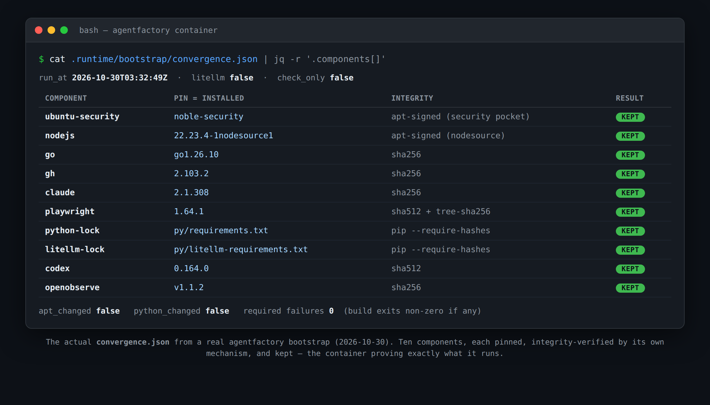

Not part of the article. Title → Medium title field. The italic line → Medium subtitle (small-T). Then select everything below the dashed line, copy, and paste over the story body. Figure is embedded via a relative path, so keep this HTML next to cycle-af-a6b105d1-screen-convergence.png.
Reproducible, integrity-verified installs for a multi-agent Claude Code factory - converge to the pins or fail the build, and prove exactly what ran.
Here's a thing you stop thinking about once your agents work: they run unattended, for hours, holding your credentials, inside a container you built once and now mostly ignore. I run a lot of them. And one day I asked myself a question I couldn't actually answer - did this container install EXACTLY what I pinned? Or did a base image float, a package pick up a silent point bump, a tool quietly pull "latest" while I wasn't looking?
For autonomous agents that is not a tidiness problem. It is a trust problem. Version drift across containers is one of the quieter ways a run goes weird and you burn an afternoon chasing it - and an unpinned, unaudited dependency walking into the box your agent runs your credentials in is the louder way. "It worked on the last container" is a bad answer when you can't say what the last container even had.
So I made the bootstrap prove itself.
Every time quickstart.sh runs, it does not just "install stuff if missing" anymore. It CONVERGES: for each component it checks what's installed, compares it to the pin, and brings it to exactly that pinned version - then verifies it before anything uses it. The mechanism depends on where the thing comes from = sha256/sha512 digests for the downloaded toolchains (Claude Code, Codex, gh, Go, OpenObserve, Playwright), signed apt packages for the system layer (Ubuntu security, Node.js), and pip --require-hashes for Python.
And here's the part that makes it a guarantee instead of a hope: a REQUIRED component that cannot converge does not get waved through. The build exits non-zero. You do not get an agent running on a drifted toolchain - you get a failure you can see.
Then it writes down what it did. convergence.json is one row per component - the pin, what actually landed, how it was verified, and whether it was kept or changed. It is the container proving what it is running, without you re-probing it by hand:

The switch I reach for most is this one:
./quickstart.sh --checkThat is a read-only drift report. It tells you where an existing install has drifted from the pins and changes NOTHING - no installs, no package lists refreshed, no surprises. You can run it on a box that's been up for weeks and just ask "are you still what I think you are?"
And drift is not the only thing that rots. A pin you trusted on Monday can have a CVE disclosed against it on Thursday. So there's a daily audit in CI that runs every pinned package against the advisory databases - a newly disclosed problem in a pin surfaces on its own, instead of waiting for me to cut the next release and notice.
Because I decided the project has to. This is written down now as an architecture decision the repo is held to: agentfactory is committed to being the most secure way to run an agent, and every change keeps or STRENGTHENS every security control - a capability that cannot be built without weakening one does not get built. That is the real shift. This started as a factory of agents. What it is becoming is the most secure way to run multi-agent orchestration, and the pins-and-convergence work is just the first thing you can see from the outside.
Plugins are part of that too - third-party agents and tools install behind a trust boundary, from a pinned commit, as a read-only snapshot, with their provenance recorded. And there's a security-program review formula, fable-secure, that can call an external scanner over your repo when you bind one as a plugin. Honest about where that one stands: agentfactory ships the integration POINT, not the scanner - bind your own today, and when none is bound the gate records "tool absent" and the review carries on instead of lying about a scan it didn't run. More of those to come.
One limit worth saying plainly, because convergence is easy to oversell: pinning and verifying a known set does not bless a dependency you add OUTSIDE the pins - put an unpinned tool in the box and that's on you, not on the convergence. What this gives you is that the set the project DOES manage is exactly what you pinned, verified, and auditable - every container, every run.
The code is on GitHub: github.com/stempeck/agentfactory. If you run agents unattended - can you say, right now, what your last container actually installed, and prove it? Or are you trusting "latest" like I was? Happy to help if you want to wire this into your own setup.
Learn it, Live it, Share it!